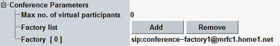

This node configures settings for conference calls over IMS. See also "Setting Up a Conference Call".
Option R&S CMW-KAA21 is required.
Many settings for a conference call are taken from the virtual subscriber profile number 1. Examples for such settings are the behavior, the signaling type and the media endpoint settings. So you do not need to configure these settings explicitly for conference calls. Configure the virtual subscriber profile 1 compatible to your DUT.

Limits the number of virtual subscribers allowed to participate in a conference call. The value 0 means that there is no limit.
Remote command:List of reachable conference server addresses. Enter all conference server addresses relevant for your DUTs.
Use the buttons to add a line to the end of the list or to remove the last line. Edit the entries directly in the dialog box.
The list must contain at least one entry.
Remote command: